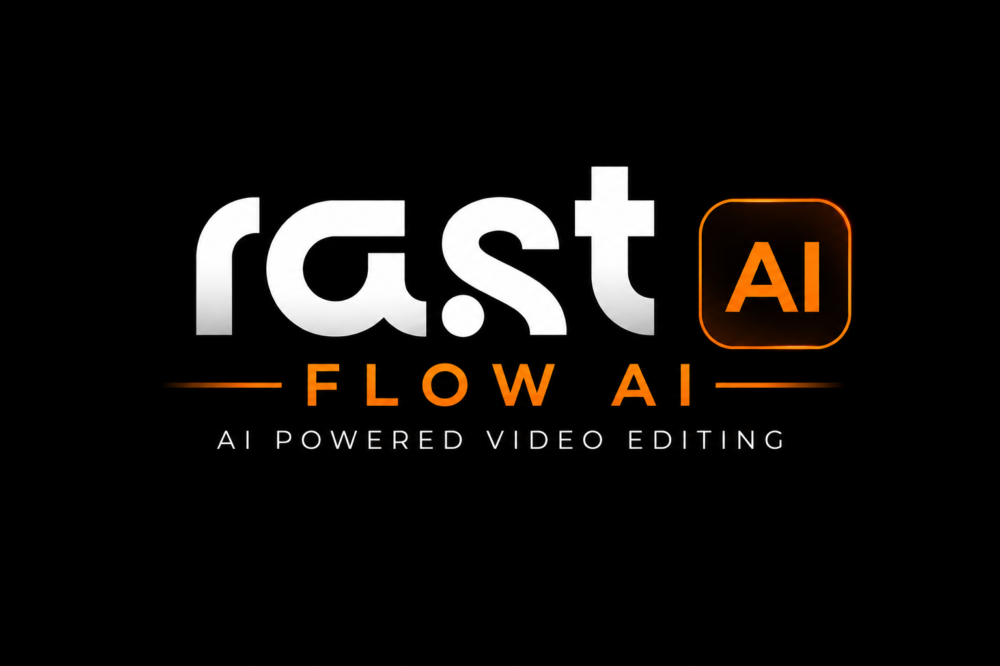

⚙
Transkript
Kurgu
Altyazı
AI Editör
✦ Transkript Oluştur
✨ AI Düzelt
🪄
🔁
☑
☐
⧉
Sessizlik
s
→
Aa
Tümünü Değiştir
✦
Transkript Bekleniyor
Timeline'da klibini hazırla ve
Transkript Oluştur
'a bas.
Kelime
0
·
Silinen
0
·
Segment
0
·
Süre
00:00
Sessizlik Kaldırma
Eşik Değeri (dB)
Min. Süre (s)
Tespit edilen
—
Toplam süre
—
💡
FFmpeg desibel analizini başlatmak için tarama yapın, ardından kesimi uygulamak için Premiere'e gönderin.
🔍 Sessizlikleri Tara
+ Tümünü Listeye Ekle
Tekrar Avcısı
Yöntem
Akıllı Kayan Pencere
Birebir aynı (ardışık)
Benzer kelime (bulanık eşleşme)
🔍 Tekrarları Tara
Filler Kelimeler
Filler İşaretle
Premiere'e Uygula
Ripple Delete (boşluk kapat)
✂ Kesimi Uygula
Geri almak için Premiere'de Ctrl+Z.
Önizleme
Kelime
kelime
animasyon
Önizlemedeki metni fareyle sürükleyerek de konumlandırabilirsiniz.
Tipografi
Font
Arial
Helvetica
Impact
Georgia
Trebuchet MS
Verdana
Boyut (px)
Renkler
Metin Rengi
Vurgu Rengi (Aktif Kelime)
Kenarlık & Gölge
Stroke (px)
Stroke Rengi
Gölge Efekti
Ekran Konumu
Yatay (X):
50
%
Dikey (Y):
85
%
Yatay Hizalama
◀ Sol
■ Orta
▶ Sağ
Konum Hazır Ayarları
↖
↑
↗
←
■
→
↙
↓
↘
Animasyon
Bounce / Pop-up
Kelime kelime vurgu
Görünüm Modu
Kelime Kelime
Satır Satır
Tüm Metin
Altyazı Tarzı
Tarz
Kurumsal / Sade
Dinamik / Animasyonlu
Arka Plan Metin Kutusu (Box)
Kutu Rengi
Opaklık:
75
%
Pasif Kelime Rengi
Büyük Harf (ALL CAPS)
✨ Animasyonlu Altyazı
📄 SRT İndir
Animasyonlu Altyazı
:
templates/caption.mogrt
şablonunu her altyazı için timeline'a koyar (stil + animasyon şablondan gelir).
SRT İndir
: Harici .srt dosyası üretir.
Oluşturulan Dosya
📄
—
Dosya Premiere Proje panelinizde görünecektir.
Görünmüyorsa yukarıdaki yoldan manuel sürükleyin.
AI Bağlantısı
API Anahtarı
👁
Model
GPT-4o
GPT-4o Mini
Claude Sonnet 4.6
Claude Opus 4.8
AI Temizleme
🪄 Transkripti AI ile Temizle
—
Silinen:
0
Sebep:
0
Tespit Edilen Kesimler
İpucu
🤖
AI, kekelemeleri, dolgu sesleri ve hatalı çekimleri (multi-take) tespit ederek transkripti temizler. Sonuçları inceleyip onayladıktan sonra
Kurgu
sekmesinden Premiere'e uygulayabilirsiniz.
0
kesim hazır
0.0s
↶
✂ Premiere'e Uygula
Ayarlar
✕
Transkript Bağlantısı
Motor
OpenAI (whisper-1, ücretli)
Groq (whisper-large-v3, ücretsiz · hızlı)
Yerel (whisper.cpp, ücretsiz · offline)
OpenAI API Key
👁
Kaydet
🔒 AES-256 ile şifrelenip cihazına özgü anahtarla saklanır.
Groq API Key
👁
Kaydet
🆓 console.groq.com'dan ücretsiz alınır. AES-256 ile şifreli saklanır.
💻 whisper.cpp ile tamamen offline & ücretsiz. (Kurulum bir sonraki adımda eklenecek.)
Dil
Türkçe
English
Deutsch
Français
Español
Otomatik Algıla
Kaynak & Aralık
Kapsam (Tüm Sekans / In-Out / Seçili Klipler) artık her transkriptte açılan pencereden seçilir.
Sekans Bilgisini Al
—
Ses (otomatik)
16000
Mono
Günlük
Neyi transkript edelim?
✕
—
▦
Tüm Sekans
—
⟦⟧
In/Out Aralığı
—
▣
Seçili Klipler
—
Seçtiğin kapsam Whisper'a gönderilir.
İşleniyor…